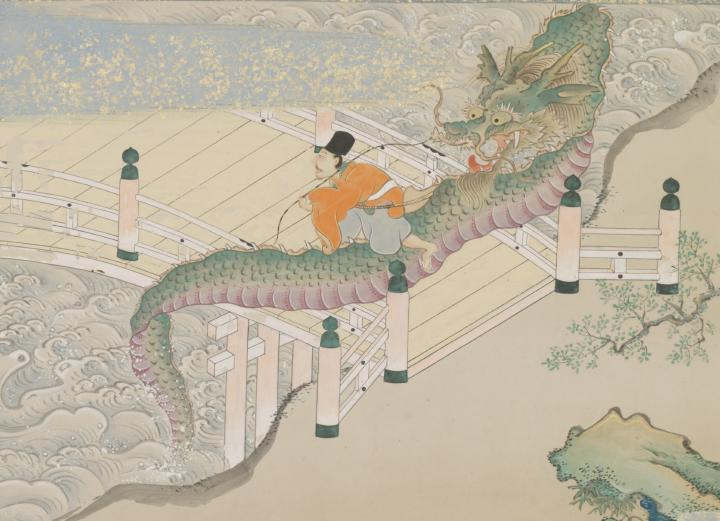

大蛇に田原藤太が乗っている。大蛇にはひげと角が生えており、体は緑色でうろこに覆われている。口を開き舌を出しており、その口の中には牙が生えている。背中には棘が生えている。詞書には大蛇について「其の丈二十丈もや有るらむと思しき大蛇の橋の上に横はり臥せり。二つの眼の耀ける様は、天に日の並び給ふが如し。十二の角の鋭利なる事は、冬枯の森の梢に異ならず。鉄の牙上下に生ひ違ひたる中より、紅の舌を振出しけるは、焔を吐くかと怪しまる。」と説明されている。
著作者：英一蝶／出典：親書誌：U426_nichibunken_0094：田原藤太秀郷；タワラトウタヒデサト／日付：2008／資源識別子：U426_nichibunken_0094_0001_0000
Copyright (c)2010- International Research Center for Japanese Studies, Kyoto, Japan. All rights reserved.